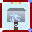
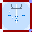

바이퍼는 공중 이동과 연계 콤보에 특화된 사이버 어쌔신 캐릭터입니다.
5개의 고유 스킬 슬롯과 독립적인 쿨다운 시스템을 보유하며, 게이지 오브 주변에 반원 형태로 스킬 아이콘이 배치됩니다.
* 바이퍼에 대한 상세 문서는 별도로 제작 예정입니다.
| 항목 | 내용 |
| 컨셉 | 사이버 어쌔신 / 공중기동 + 연계콤보 |
| 스킬 슬롯 | 5개 (반원 배치, 개별 쿨다운) |
| 테마 컬러 | 다크 퍼플 (30, 10, 45) |
| 플레이 스타일 | 높은 기동성 + 스킬 연계로 콤보 딜링 |
스테이지 1~3까지 각 스테이지에 3명의 보스가 배치되어, 총 9명의 보스와 대전할 수 있습니다.
스테이지 진입 시 3명 중 랜덤으로 1명이 선택되어 대전합니다.
STAGE 1 - 한국 전통
풍악보이
한국 전통 의상을 입고 상모를 쓴 풍물 악사
| 스킬명 | 설명 |
|---|
| 상모돌리기 | 상모를 회전시켜 공의 수평 속도를 0으로 만들고 수직 낙하시킵니다. 약 4.3초간 지속되며, 발동 중 플레이어의 타격이 무효화됩니다. |
| 팽이치기 | 회전하는 팽이 2개(분노 시 4개)를 플레이어를 향해 던집니다. 게이지 150 소모. 약 3.6초간 지속. 발동 확률 20%. |
포도대장
조선시대 포도청 관리 복장에 포승줄을 들고 다니는 포졸
| 스킬명 | 설명 |
|---|
| 포승줄 | 플레이어를 향해 포승줄을 던집니다. 적중 시 3초간 속박되어 이동속도가 50% 감소합니다. |
| 포졸소환 | 2명의 순찰 포졸을 소환합니다. 포졸이 5초간 경기장을 돌아다니며 공을 밀어냅니다. |
각시탈
하회탈을 쓰고 알록달록한 저고리를 입은 전통 광대, 부채를 들고 있음
| 스킬명 | 설명 |
|---|
| 부채던지기 | 0.5초 와인드업 후 회전하는 부채를 투척합니다. 적중 시 스턴. 분노 모드에서는 3개의 부채를 부채꼴(±35°)로 동시 발사합니다. |
| 부채바람 소용돌이 | 1초 차지 후 4초간 소용돌이를 생성합니다. 소용돌이에 공이 빨려들어가면 최대 1초간 붙잡혀 있다가 튕겨나옵니다. |
STAGE 2 - 정글/늪지
악어장군
날카로운 이빨과 갑옷을 두른 악어 전사, 무거운 포식자의 걸음걸이
| 스킬명 | 설명 |
|---|
| 스피드디펜스 | 2초간 이동속도 3배로 증가합니다. 방향 전환도 2배 빨라져 어떤 공도 쫓아갈 수 있습니다. 쿨다운 25초. |
| 정글지진 | 게이지 500 소모. 6초간 경기장을 흔들며 플레이어 이동속도를 1배로 고정하고, 난이도에 따라 1~4개의 바위를 소환합니다. |
| 물대포 | 정글지진 후 7~12초 뒤 자동 발동. 0.8초 차지 후 고압 물줄기를 발사해 바위를 파괴하고 파편으로 플레이어를 넉백시킵니다. |
두더지왕
땅에서 머리만 내밀고 있는 두더지, 출현 시 흙먼지 파티클이 튀어오름
| 스킬명 | 설명 |
|---|
| 땅굴 습격 | 땅 속으로 잠수 후 플레이어 아래에서 출현합니다. 경고 0.5초 → 돌진 0.83초 → 타격 0.67초. 10개의 가시가 플레이어 방향으로 퍼져나갑니다. 쿨다운 8초. |
| 회전발톱 | 공을 발톱으로 할퀴어 강력한 커브공을 발사합니다. |
| 친구두더지 소환 | 경기장 여기저기서 빨강/노랑/파랑 두더지가 튀어나와 방해합니다. 최대 2라운드 지속. |
아라크네
어두운 갈색 체색의 대형 거미, 8개의 다리가 교차 보행 사이클로 움직임
| 스킬명 | 설명 |
|---|
| 거미줄 장판 | 바닥에 끈끈이 트랩을 설치합니다. 밟으면 5초간 이동속도 60% 감소. 대쉬로 파괴 가능. 여러 개 동시 설치 가능. 쿨다운 15초. |
| 거미줄 구출 | 공이 골라인에 닿기 직전 거미줄을 쏘아 공을 끌어당겨 구출합니다. 공을 1초간 붙잡았다가 놓습니다. 쿨다운 15초. |
| 분노 폭주 | 플레이어가 4점 달성 시 발동. 화면이 흔들리며 붉은 거미줄 3개를 연속 발사합니다. |
STAGE 3 - 멘헤라/인형
멘헤라걸
짝짝이 눈(하트+단추), 터진 솔기, 안전핀 귀걸이, 붕대 감은 팔을 가진 소녀
| 스킬명 | 설명 |
|---|
| 눈물샤워 | 화면 상단에서 눈물이 쏟아집니다. 일반 시 4~7개, 분노 시 8~14개. 맞을 때마다 이동속도 20% 감소 (중첩). 게이지 80 소모. 발동 확률 13%. |
| 사이코볼 | 게이지 500(풀 게이지) 소모. 5초간(분노 시 7.5초) 공이 보스 쪽으로 소용돌이처럼 끌려가며 배경이 붉게 점멸합니다. |
| 저주 보물상자 | 저주가 걸린 상자를 플레이어 영역에 던집니다. 대쉬로 상자를 터트리면 연기가 뿜어져 나오며, 연기에 닿으면 일정 시간 동안 방향키와 대쉬가 반대로 작동합니다. 게이지 120 소모. 쿨다운 15초. |
테디베어
터진 솔기 사이로 솜이 삐져나온 어두운 봉제인형, 불안하게 떨리며 움직임
| 스킬명 | 설명 |
|---|
| 솜뭉치 투척 | 3~5개의 솜뭉치를 투척합니다. 적중 시 2초간 화면 암전되어 공이 보이지 않게 됩니다. 쿨다운 10초. |
| 솜뭉치 폭탄 | 경기장에 3~5개의 솜 폭탄을 설치합니다. 밟으면 이동속도 50% 감소. 공이 맞으면 고스트 커브가 발동되어 3초간 공이 급변향합니다. 쿨다운 12초. |
| 죽음의 포옹 | 테디베어가 플레이어 영역 중앙으로 돌진합니다. 5초간 너비 350px의 차단 구역을 생성하여 해당 영역에서 대쉬 사용이 불가능해집니다. 쿨다운 15초. |
| 하트 빔 | 하트 투사체를 발사합니다. 적중 시 3연속 넉백 (좌우 번갈아 60~85px씩)이 발생하며 화면이 흔들립니다. 쿨다운 8초. |
엘리스
파란 빅토리아풍 드레스와 하얀 에이프런을 입고 마법 거울을 든 금발 소녀
| 스킬명 | 설명 |
|---|
| 거울 세계 | 5초간 게임 화면 전체가 좌우 반전됩니다. 모든 조작과 공의 궤적이 뒤집혀 혼란을 유발합니다. 쿨다운 15초. |
| 사이즈 시프트 | 4초간 공의 크기를 랜덤으로 변경합니다. 2배로 커지거나(회피 난이도 증가) 0.5배로 작아집니다(시인성 감소). 쿨다운 10초. |
| 토끼 투사체 | 3~4마리의 토끼를 발사합니다. 토끼가 플레이어 패들 위에 2초간 달라붙어 방해합니다. 쿨다운 8초. |
이제 아이템을 장착하면 캐릭터의 해당 부위 외형이 실제로 변경됩니다.
| 슬롯 | 영문 | 대표 아이템 |
| 머리 | head | 가시투구, 방탄모자, 초월자의 관, 오딘의 눈 |
| 상의 | torso | 기술조끼, 벌크업 슈트, 역경의갑옷, 파편갑옷 |
| 팔 (좌/우) | l_arm / r_arm | 코만도암, 골드디거, 라그나로크 해머, 포세이돈의 삼지창 |
| 등 | back | 충전배낭, 판도라의 유산 |
| 무릎 | knee | 소울버스트 |
| 장신구 | accessory | 럭키코인, 현자의반지 |
양손 장비 자동 배치: 한쪽 팔에 이미 아이템이 장착되어 있으면 새 팔 장비는 자동으로 반대쪽에 배치됩니다. 전설 무기(라그나로크 해머, 포세이돈의 삼지창)는 무기 슬롯이 이미 차있으면 방패 슬롯에 장착됩니다.
라운드가 종료되고 전광판(스코어보드)이 등장할 때 전용 사운드 이펙트가 재생됩니다.
전광판 등장 시점에 맞춘 전용 SE가 추가되어 라운드 전환의 임팩트가 강화되었습니다. 승리/패배 결과에 따라 서로 다른 피드백을 제공합니다.
기존에는 콤보 적립 시 게이지 획득량 보너스만 제공했으나, 이번 업데이트로 파워 스매싱의 공 속도와 드라이브의 커브력까지 함께 강화됩니다.
1
-
2
+20%
3
+40%
4
+60%
5
+80%
6+
+100%
| 콤보 수 | 게이지 보너스 | 파워스매싱 공속 | 드라이브 커브력 |
| 1 (기본) | +0% | 기본 | 기본 |
| 2 콤보 | +20% | +증가 | +증가 |
| 3 콤보 | +40% | ++증가 | ++증가 |
| 4 콤보 | +60% | +++증가 | +++증가 |
| 5 콤보 | +80% | ++++증가 | ++++증가 |
| 6+ 콤보 | +100% (MAX) | MAX | MAX |
대쉬 중 콤보 유지: 대쉬 시 40프레임(약 0.67초)의 유예 시간이 주어져, 대쉬 직후 스킬을 사용하면 콤보가 유지됩니다. 유예 시간 내에 스킬을 사용하지 않으면 콤보가 리셋됩니다.
콤보 시스템의 핵심 변화: 이제 콤보를 쌓는 것이 단순 게이지 보너스를 넘어 파워스매싱과 드라이브의 실질적 성능을 끌어올리는 전략적 기술이 되었습니다. 높은 콤보를 유지하며 싸우는 것이 스매셔의 핵심 플레이 패턴입니다.
🏜 사막화 (Desertification)
경기장 사방에 모래가 쌓여 플레이 공간이 점점 좁아집니다.
공으로 모래를 부수거나, 폭탄 등의 폭발물로 모래를 제거하면서 플레이해야 합니다.
| 항목 | 내용 |
| 지속 시간 | 단 1라운드만 발생 (다음 라운드 넘어가면 자동 종료) |
| 모래 제거 방법 | 공 충돌, 폭탄/폭발물 폭발 |
| 종료 연출 | 라운드 종료 시 모든 모래가 녹아서 사라지는 애니메이션 |
| 발생 확률 | 날씨 이벤트 확률 10% 중 균등 배분 |
사막화는 다른 날씨 이벤트(2~3라운드 지속)와 달리 1라운드 한정으로, 짧지만 강렬한 임팩트를 줍니다. 모래를 빠르게 제거하는 것이 핵심 전략입니다.
빙판 발생 시
플레이어만 미끄러짐 적용
보스는 정상 이동
빙판 발생 시
플레이어 AND 보스 모두 미끄러짐 적용
방향 전환 속도 20% 감소, 가속도 25%로 제한
| 빙판 효과 | 수치 | 적용 대상 |
| 방향 전환 패널티 | 20% 감소 | 플레이어 + 보스 |
| 가속도 제한 | 25%로 감소 | 플레이어 + 보스 |
| 미끄러짐 지속 | 45 프레임 (0.75초) | 플레이어 + 보스 |
이제 빙판 날씨는 양측 모두에게 공평하게 적용되어, 빙판 위에서의 전략적 움직임이 더욱 중요해졌습니다. 보스도 미끄러지기 때문에 빙판을 역이용한 플레이가 가능합니다.
총 10종의 신규 아이템이 추가되었습니다. (액티브 4종 / 패시브 5종 / 신화 1종)
자기장발생기
기묘한 약병
소울버스트
역경의갑옷
럭키코인
💍
현자의반지
판도라의유산
사용 시 7초 동안 자기장을 생성합니다.
반경 내에 공이 들어오면 자기력으로 끌어당겨 리시브를 보조합니다.
스폰 확률: 0.7%
상대방 쪽으로 날아가 넉백 + 0.8초 스턴을 부여합니다.
부메랑은 플레이어에게 되돌아와 재사용 가능합니다.
단, 공에 맞으면 파괴됩니다.
투척류 → 코만도암 영향 O | 스폰 확률: 1.5%
상대방 쪽으로 던져서 설치합니다.
상대가 밟으면 방향 전환 속도가 크게 감소합니다.
빙판 날씨와 유사한 미끄러짐 효과.
투척류 → 코만도암 영향 O | 스폰 확률: 1.0%
마시면 2가지 마법 중
랜덤으로 1가지가 발동됩니다.
🔬 거대화
몸집이 매우 커짐
이동속도 감소
🔭 소형화
몸집이 매우 작아짐
이동속도 증가
지속시간:
20초 | 스폰 확률: 0.3%
패시브 아이템의 20~40 같은 숫자 범위는 롤 옵션입니다. 아이템 획득 시 해당 범위 내에서 랜덤으로 수치가 결정됩니다.
대쉬 토큰이 0 (또는 충전 중)일 때,
게이지를 소모하여 대쉬를 발동합니다.
| 게이지 소모량 | 130 ~ 200 |
| 대쉬 타입 | 단발 대쉬만 가능 (연속대쉬 불가) |
원래 토큰이 없으면 하프대쉬만 발동되지만, 이 아이템으로 풀 대쉬가 가능해집니다. 게이지 소모가 크므로 상황 판단이 중요합니다.
라운드 패배 시 20 ~ 30% 확률로 다음 라운드 무적 발동.
무적 지속시간: 10 ~ 15초
무적 중에는 공이 뒤로 넘어가도 패배하지 않고 공을 반사시킵니다.
스폰 확률: 0.4%
공에 맞았을 때
15 ~ 25% 확률로 가시 파편 발사.
| 파편 수 | 5 ~ 9개 |
| 넉백 레벨 | 1 ~ 4 Lv |
| 게이지 소모 | 25 ~ 50 |
스폰 확률: 0.4%
아이템(물음표 공)이 맵에 스폰될 때 5 ~ 15% 확률로
보너스 아이템 1개가 추가 스폰됩니다.
파밍 효율을 높여주는 유틸리티 장신구
모든 퍽 레벨 +1 상승
패널티:
이동속도 10 ~ 20% 감소
몸집 크기 10 ~ 20% 감소
강력한 퍽 보너스를 제공하지만 이동속도와 몸집 패널티가 크므로 신중한 선택이 필요합니다. TAB 캐릭터 정보창에서 패널티를 확인할 수 있습니다.
매 라운드 승리 시
40 ~ 70% 확률로
'승리의 유산' 발동
발동 시 다음 라운드 시작 전
3개의 액티브 아이템 중 1개를 선택할 수 있습니다.
선택한 아이템은 액티브 슬롯에 추가됩니다.
| 발동 확률 | 40 ~ 70% |
| 매직찬스 | 10 ~ 30% |

판도라의 유산 발동 - 3개의 액티브 아이템 중 선택하는 화면
매직찬스 롤 옵션 수치가 높을수록 고등급 액티브 아이템의 출현 빈도가 높아집니다. 운영 능력에 따라 매 라운드 새로운 액티브를 확보할 수 있는 핵심 신화 아이템입니다.
신규 퍽 2종이 추가되었습니다. 모두 최대 5레벨까지 강화 가능합니다.
신성한 월계수 잎이 패들 주위를 회전하며 보스의 공을 막아줍니다.
| Lv | 효과 |
|---|
| 1 | 월계수 잎 1개 보호 |
| 2 | 월계수 잎 2개 보호 |
| 3 | 월계수 잎 3개 보호 |
| 4 | 월계수 잎 4개 보호 |
| 5 | 월계수 잎 5개 보호 |
| 회전 반경 | 196px (패들 주위 공전) |
| 회전 속도 | 1.8 rad/s |
| 잎 판정 크기 | 35px |
| 재생 시간 | 파괴 후 30초마다 1개 재생 |
| 등급 | Common |
신화 아이템 시너지: 신성 월계수(Sacred Laurel) 장착 시 롤 옵션에 따라 잎 개수 3 ~ 8개가 추가 보너스로 지급됩니다. 퍽 레벨 + 신화 보너스가 중첩됩니다.
대쉬 후 일정 확률로 토큰이 즉시 충전됩니다. 대쉬기어와 중첩됩니다.
| Lv | 발동확률 증가 | 대쉬기어 포함 시 최대 |
|---|
| 1 | +5% | ~15% |
| 2 | +10% | ~20% |
| 3 | +15% | ~25% |
| 4 | +20% | ~30% |
| 5 | +25% | ~35% |
| 발동 조건 | 대쉬 성공 후 확률 판정 |
| 효과 | 대쉬 토큰 즉시 1개 충전 |
| 효과 지속 | 3초 (180F) |
| 쿨다운 할인 | 90% 쿨다운 감소 |
| 이펙트 | 주황-적색 확산 이펙트 (0.2초) |
| 등급 | Common |
대쉬기어 시너지: 패시브 아이템 대쉬기어의 부스트차징 롤 옵션 (4 ~ 10%)과 중첩되어, 최대 레벨 + 대쉬기어 시 약 35%의 발동확률을 달성할 수 있습니다.
기존에는 무료로 발동되던 신화 아이템의 고유 능력에 게이지 소모가 추가되었습니다.
| 아이콘 |
아이템 |
고유 능력 |
게이지 소모 (롤 옵션) |
비고 |
|

|
라그나로크 해머 |
스턴공 발동 |
20 ~ 40 |
reverse 옵션 (낮을수록 좋음) |
|

|
포세이돈의 삼지창 |
물보라 발동 |
20 ~ 40 |
reverse 옵션 (낮을수록 좋음) |
고유 능력 발동 시 게이지 소모 없음
무제한 발동 가능
고유 능력 발동 시 게이지 20~40 소모
게이지 관리 전략 필요
밸런스 조정 의도: 신화 아이템의 강력한 효과에 리소스 비용을 부과하여, 무한 스팸을 방지하고 게이지 관리라는 전략적 요소를 추가했습니다. 연마 퍽과 강화 버프가 적용되므로 롤 옵션이 중요합니다.

코만도 캐릭터 인게임 전투 화면
코만도의 기본 화기가 권총에서 새총(Slingshot)으로 변경되었습니다.
새총은 1~3단계 차징을 조절하여 발사할 수 있으며, 차징할수록 성능이 올라갑니다.
| 차징 단계 |
필요 시간 |
발사속도 배율 |
넉백 배율 |
스턴시간 배율 |
게이지 소모 |
|
1단계
|
0.5초 (30F) |
x0.7 |
x0.7 |
x0.7 |
20 |
|
2단계
|
1.5초 (90F) |
x1.0 |
x1.0 |
x1.0 |
40 |
|
3단계
|
3.0초 (180F) |
x1.3 |
x1.5 |
x1.3 |
60 |
| 속성 | 값 |
| 탄환 색상 | 은색 메탈 (180, 180, 195) |
| 탄환 크기 | 6px |
| 발사 후 쿨다운 | 0.5초 (30F) |
| 발사 후 조작 잠금 | 0.2초 (12F) |
| 특수 판정 | 레그샷 / 헤드샷 확률 발동 (권총과 동일) |
| 게이지 소모 | 0.5초당 20 게이지 |
새총은 권총보다 즉발 성능은 떨어지지만, 풀차징 시 넉백 1.5배라는 높은 넉백력을 가집니다. 상황에 따라 빠른 1단 차징과 풀차징을 구분하여 사용하는 것이 중요합니다.
게임 진행 중 기본화기를 '권총'으로 변경하는 퍽을 획득하면, 새총에서 권총으로 무기가 전환됩니다.
기본 상태
새총 (Slingshot)
차징식 발사
밸런스 조정된 성능
권총 퍽 획득 후
권총 (Pistol)
즉발 사격
높은 성능 (상위 호환)
밸런스 조정 배경: 권총의 성능이 지나치게 강력하여 코만도가 사기 캐릭터로 평가되었습니다. 이에 따라 기본 화기를 새총으로 변경하고, 권총은 퍽을 통해 해금하는 방식으로 밸런스를 조정했습니다. 권총은 여전히 강력하지만, 획득하기 위한 비용(퍽 슬롯)이 필요합니다.
| 비교 항목 | 새총 (기본) | 권총 (퍽 해금) |
| 발사 방식 | 차징 (1~3단계) | 즉발 |
| 게이지 효율 | 차징에 따라 20~60 | 고정 |
| 넉백력 | 차징 의존 (최대 x1.5) | 일정 수준 유지 |
| 획득 조건 | 기본 장착 | 퍽 슬롯 사용 필요 |